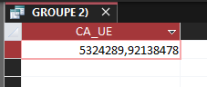
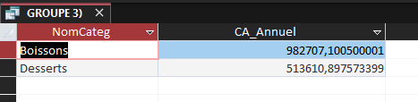
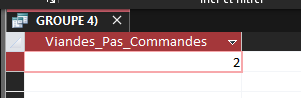
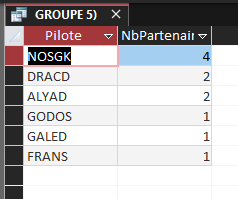

Mission 2 — Analyse des données
Présentation
Nous utilisons des requêtes SQL dans Access pour répondre à plusieurs questions sur KDou. Les résultats présentés ci-dessous seront à compléter avec les valeurs obtenues dans la base de données.
Indicateur 2 — Fournisseurs de l'Union européenne
Question : Quel est le chiffre d'affaires total généré avec les fournisseurs de l'Union européenne ?
Intérêt
Cette requête permet à KDou de connaître le montant des ventes liées aux fournisseurs européens. L'entreprise pourra utiliser cette information pour réfléchir à l'origine de ses produits.
Requête SQL Access
SELECT
Sum(D.[Quantité] * P.CoutAchat * Ca.CoefMarge) AS CA_UE
FROM
(
(
(
DetailCommande AS D
INNER JOIN Produit AS P
ON D.[Réf produit] = P.RefProd
)
INNER JOIN Categorie AS Ca
ON P.CodeCateg = Ca.CodeCateg
)
INNER JOIN Fournisseur AS F
ON P.NoFour = F.NoFour
)
INNER JOIN Pays AS Pa
ON F.NoPays = Pa.NoPays
WHERE
Pa.UE = True;
Explication
On relie les produits aux catégories, aux fournisseurs et aux pays. On garde les fournisseurs de l'Union européenne avec WHERE. La fonction Sum additionne les montants calculés à partir des quantités, des coûts d'achat et des coefficients de marge.
Résultat : montant total en euros à renseigner après exécution dans Access (calcul sans les remises).

Indicateur 3 — Desserts et boissons
Question : Quel est le chiffre d'affaires réalisé en 2021 pour les desserts et les boissons ?
Intérêt
Cette requête permet de comparer les montants des ventes de desserts et de boissons sur une année. On peut modifier les dates pour étudier une autre année.
Requête SQL Access
SELECT
Ca.NomCateg,
Sum(D.[Quantité] * P.CoutAchat * Ca.CoefMarge) AS CA_Annuel
FROM
(
(
Commande AS C
INNER JOIN DetailCommande AS D
ON C.[N° commande] = D.[N° commande]
)
INNER JOIN Produit AS P
ON D.[Réf produit] = P.RefProd
)
INNER JOIN Categorie AS Ca
ON P.CodeCateg = Ca.CodeCateg
WHERE
Ca.NomCateg IN ("Desserts", "Boissons")
AND C.DateCde >= #01/01/2021#
AND C.DateCde < #01/01/2022#
GROUP BY
Ca.NomCateg;
Explication
On garde les commandes passées en 2021 dans les catégories desserts et boissons. GROUP BY sépare les deux catégories, puis Sum calcule le montant de leurs ventes.
Résultat : chiffre d'affaires de chaque catégorie à renseigner après exécution dans Access (calcul sans les remises).

Indicateur 4 — Produits carnés non commandés
Question : Combien de produits de la catégorie viandes n'ont jamais été commandés ?
Intérêt
Cette requête permet de repérer les produits de la catégorie viandes qui n'apparaissent dans aucune commande. KDou peut ainsi mieux connaître son catalogue.
Requête SQL Access
SELECT
Count(P.RefProd) AS NbProduitsNonCommandes
FROM
(
Produit AS P
INNER JOIN Categorie AS Ca
ON P.CodeCateg = Ca.CodeCateg
)
LEFT JOIN DetailCommande AS D
ON P.RefProd = D.[Réf produit]
WHERE
Ca.NomCateg = "Viandes"
AND D.[Réf produit] IS NULL;
Explication
On sélectionne les produits de la catégorie viandes. Le LEFT JOIN garde les produits sans commande, IS NULL permet de les retrouver et Count les compte.
Résultat : nombre de produits à renseigner après exécution dans Access.

Indicateur 5 — Clients partenaires
Question : Combien de clients partenaires possède chaque client pilote ?
Intérêt
Cette requête permet de connaître le nombre de partenaires rattachés à chaque client pilote. Elle aide à voir la taille des différents réseaux de clients.
Requête SQL Access
SELECT
Cl.CodeCliPart AS Pilote,
Count(*) AS NbPartenaires
FROM
Clientele AS Cl
WHERE
Cl.CodeCliPart IS NOT NULL
GROUP BY
Cl.CodeCliPart
ORDER BY
Count(*) DESC;
Explication
On utilise CodeCliPart pour identifier le pilote de chaque partenaire. GROUP BY regroupe les partenaires par pilote, Count les compte et DESC trie les résultats du plus grand au plus petit.
Résultat : code de chaque pilote et nombre de partenaires à renseigner après exécution dans Access.
